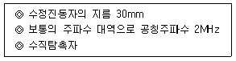
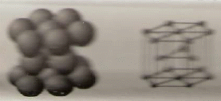
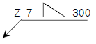

초음파비파괴검사기능사 (2006-07-16 기출문제)
1과목: 초음파탐상시험법
1. 초음파탐상시험시 진동자의 직경이 일정할 때 주파수가 증가함에 따라 빔(beam)의 분산각은?
- 감소한다.
- 증가한다.
- 변하지 않는다.
- 지수함수적으로 증가하다가 일정해진다.
(정답률: 46%)

2. 비파괴검사법 중 침투탐상시험에 대한 특성 설명으로 잘못된 것은?
- 불연속 또는 균열의 깊이를 정확하게 측정할 수 있는 방법이다.
- 큰 부품의 일부분씩을 탐상시험할 수 있는 방법이다.
- 표면의 개구(開口)결함을 찾는데 효과적인 방법이다.
- 침투 물질의 종류나 적용 방법에 따라 민감도가 변할 수 있다.
(정답률: 80%)
3. A 스코프(Scope)초음파탐상기로 작은 불연속에서 얻을 수 있는 지시의 최대 높이를 무엇이라고 하는가?
- 탐상기의 분해능
- 탐상기의 감도
- 탐상기의 투과력
- 탐상기의 선별도
(정답률: 알수없음)
4. 누설검사에 활용되는 다음 단위 중 1기압과 다른 것은?
- 760 mmHg
- 760 Torr
- 980 kg/ccm2
- 1,013 mbar
(정답률: 64%)
5. 초음파탐상기 송신부의 주파수 스펙트럼을 조정하므로서 탐촉자와 송신 케이블 사이의 상태를 최적화하는 탐상장치의 조절 부분을 무엇이라 하는가?
- 증폭 조정기
- 수신기
- 펄스 조정기
- 동시작용장치
(정답률: 34%)
6. 초음파탐상시험시 시험체의 거리를 신속히 측정하기 위해 탐상기의 스크린상에 눈금으로 나눈 것을 무엇이라 하는가?
- 송신 Pulse
- 시간축
- Marker
- Sweep ling
(정답률: 70%)
7. 어떤 재질에서의 초음파의 속도가 4.0×103 m/sec 이고, 탐촉자의 주파수가 5MHz 이면 파장은 얼마인가?
- 0.08 mm
- 0.8 mm
- 0.04 mm
- 0.4 mm
(정답률: 알수없음)
8. 금속재료의 초음파탐상시험시 그 재료 내부의 결정입자 크기가 클 경우, 시험에 미치는 영향이 아닌 것은?
- 초음파의 침투력이 감소한다.
- 저면 반사파의 크기가 감소한다.
- 잡음 신호가 많이 발생한다.
- 초음파의 속도가 감소한다.
(정답률: 36%)
9. 용접부의 초음파탐상시 탐촉자 면에 마모가 되지 않도록 폴리우레탄 등으로 막을 사용할 때 일어나는 일반적 현상이 아닌 것은?
- 감도가 높아진다.
- 시험재 표면과 밀착성이 좋아진다.
- 입사점이 변한다.
- 굴절각이 변한다.
(정답률: 알수없음)
10. 초음파탐상시험에 대한 분류가 잘못 설명된 것은?
- 탐촉자의 형태에 따라 펄스반사법, 투과법, 공진법 등으로 분류한다.
- 탐상도형의 표시 방식에 따라 A, B, C스코프 등으로 분류한다.
- 초음파 진동방식에 따라 수직, 경사각, 표면파, 판파탐상법등으로 분류한다.
- 접촉방법에 따라 직접 접촉법과 수침법 등으로 분류한다.
(정답률: 50%)
11. 초음파탐상시험에서 일반적으로 결함 검출에 가장 많이 사용하는 방법은?
- 펄스반사법
- 투과법
- 공진법
- 주파수 해석법
(정답률: 알수없음)
12. 초음파탐상시험에 사용되는 접촉매질의 이상적인 음향 임피던스는?
- 탐촉자의 음향임피던스보다 적어야 한다.
- 탐촉자의 음향임피던스보다 커야 한다.
- 시험체의 음향임피던스에 근접되어야 한다.
- 시험체의 음향임피던스의 1/2정도여야 한다.
(정답률: 알수없음)
13. 초음파탐상시험에서 진동자의 모형은 일반적으로 육각형이 많이 사용되며 X-cut와 Y-cut 으로 나눈다. X-cut은 결정체를 X-축에 대해 수직으로 절단하고, Y-cut은 Y-축에 수직으로 절단한다. 이 때 X-cut와 Y-cut이 만드는 파는?
- X-cut이 만드는 파 : 횡파, Y-cut이 만드는 파 : 종파
- X-cut이 만드는 파 : 종파, Y-cut이 만드는 파 : 횡파
- X-cut이 만드는 파 : 표면파, Y-cut이 만드는 파: 판파
- X-cut이 만드는 파 : 판파, Y-cut이 만드는 파 : 표면파
(정답률: 42%)
14. 초음파탐상시험에서 분해능 (resolution) 이란?
- 인법해 있는 2개의 결함을 분리해 낼 수 있는 능력
- 결함의 크기를 결정하는 능력
- 에코의 반사를 증폭하는 능력
- 두꺼운 부분의 중신에 있는 결함을 탐지하는 능력
(정답률: 84%)
15. 분할형 수직탐촉자를 이용한 초음파탐상시험의 특징에 관한 설명으로 틀린것은?
- 시험체 표면에서 가까운 거리에 있는 결함의 검출에 적합하다.
- 펄스반사식 두께측정에 이용한다.
- 시험체 내의 초음파 진행 방향과 평행한 방향으로 존재하는 결함 검출에 적합하다.
- 송수신의 초점은 시험체 표면에서 일정거리에 설정된다
(정답률: 47%)
16. 다른 비파괴검사법과 비교하였을때 와전류탐상시험의 장점에 대한 설명이 아닌것은?
- 시험을 자동화할 수 있다.
- 비접촉법으로 할 수 있다.
- 시험체의 도금두께 측정이 가능하다.
- 형상이 복잡한 것도 쉽게 검사할 수 있다.
(정답률: 알수없음)
17. 압전 탐촉자 중 극성 자기 탐촉자에 대한 설명으로 맞는 것은?
- 자연계에 존재하는 자기적 성질을 갖는 진동자를 사용한 탐촉자이다.
- 압전크리스탈 탐촉자에 비해 송신효율이 낮다.
- 수정, 황산리튬, 티탄산바륨 등의 진동자가 사용된다.
- 압전크리스탈 탐촉자에 비해 높은 온도에서 사용이 가능하다.
(정답률: 30%)
18. 초음파탐상시험시 결함의 평면을 파악하기 위해서는 어느 표시방식이 적절한가?
- A 스캔표시
- B 스캔표시
- C 스캔표시
- 디지털 표시
(정답률: 75%)
19. 방사선 투과사진의 명암도(콘트라스트)에 영향을 주는 인자 중 시험물 명암도(피사체콘트라스트)와 관련한 인자가 아닌 것은?
- 시험체의 두께차
- 산란방사선
- 방사선의 선질
- 현상 조건
(정답률: 28%)
20. 초음파 경사각탐상시험에서 접금한계 거리(길이)란?
- 탐촉자와 STB-A2 시험편이 접근할 수 있는 한계거리
- .탐촉자가 검사체에 가까이 갈 수 있는 한계거리
- 탐촉자와 STB-A1 시험편이 접금할 수 있는 한계거리
- 탐촉자의 밑면 앞부분에서 입사점까지의 거리
(정답률: 60%)
2과목: 초음파탐상관련규격
21. 초음파탐상시험시 잡음(Noise)에코를 제거하는 일반적인 방법은?
- 펄스 반복추파수를 ON(켠다.) 한다.
- 게인 손잡이를 높여 준다.
- 리젝트 손잡이를 ON(켠다.) 한다.
- 일정시간이 지나면 자연적으로 없어진다.
(정답률: 54%)
22. 형광침투탐상시험시 탐상면에 자외선을 쪼이면 결합부분에 남아 있는 형광침투액이 빛을 발한다고 한다. 이 때 탐상면에 쪼이는 자외선의 파장은 몇 Å인가?
- 5,900
- 3,650
- 6,350
- 4,650
(정답률: 알수없음)
23. 초음파 탐상기에서 입력과 출력의 정비레 관계를 나타내는 탐상기의 성능은?
- 증폭의 직선성
- 시간축의 직선성
- 원거리 분해능
- 감도여유값의 측정
(정답률: 알수없음)
24. 다음 두께 15mm 이하의 단조 강과 같이 결정립 상이 다소 미세한 재질에 대한 탐상 주파수로 다음 중 적절한 것은?
- 25MHz
- 5MHz
- 2.25MHz
- 1MHz
(정답률: 46%)
25. 다음 중 두께 15mm인 강판의 탐상면에서 깊이 7.6mm 부분에 탐상면과 평행하게 위치해 있는 결함을 검사하는 가장 효과적인 초음파탐상시험법은?
- 종파에 의한 수직탐상
- 횡파에 의한 경사각탐상
- 표면파 탐상
- 판파 탐상
(정답률: 69%)
26. 강 용접부의 초음파탐상시험 방법(KS B 0896)에 대한 설명으로 틀린 것은?
- 두께 6mm 이상의 페라이트계 강의 완전 용입부에 대하여 펄스반사법을 사용한 초음파탐상시험에 대한 규정이다.
- 강관의 제조공정 중 이음 용접부에 대한 초음파탐상시험에 적용한다.
- 용접부의 탐상은 특별한 지정이 없는 한 초음파 빔을 용접선 방향에 대하여 수직으로 향한 1탐촉자 경사각법으로 한다.
- 용접부의 탐상은 특별한 지정이 없는 한 직접 접촉법으로 실시한다.
(정답률: 30%)
27. 강용접부의 초음파탐상 시험방법(KS B 0896)에 규정된 내용 중 탐상을 한 후의 ‘기록’에 해당되지 않는 것은?
- 탐상 부분의 상태 및 손질방법
- 사용한 탐촉자, 성능 및 점검일시
- 시험 기술자의 서명 및 자격
- 기후 조건 및 용접모양
(정답률: 54%)
28. 알루미늄의 맞대기용접부의 초음파 경사각탐상 시험방법(KS B 0897)에 규정한 1탐촉자법에 대한 설명으로 잘못된 것은?
- 흠의 위치는 최소 에코높이를 표시하는 입사원 위치에서 표시한다.
- 미세한 블로홀 및 이것과 비슷한 흠의 검출을 필요로 하지 않는 경우는 A 또는 B 평가레벨을 지정한다.
- 에코높이가 A 평가레벨 이하로 B 평가레벨을 넘는 것은 B종 흠으로 구분한다.
- 모재 두께가 40mm를 넘고 80mm 이하인 경우 양면 양쪽에서 직사법에 의해 탐상한다.
(정답률: 알수없음)
29. 강 용접부의 초음파탐상시험 방법(KS B 0896)에 의한 흠 분류시 2방향 이상에서 탐상한 경우에 동일한 흠의 분류가 2류, 2류, 3류, 2류로 나타났을 때 최종 등급은?
- 1류
- 2류
- 3류
- 4류
(정답률: 82%)
30. 초음파 탐촉자의 성능 측정 방법(KS B ⑤35)에 따른 다은 조건의 탐촉자 표시 방법은?

- 2B30N
- 2Q30A
- 2Q30N
- 2Z30A
(정답률: 알수없음)
31. 강 용접부의 초음파탐상시험 방법(KS B 0896)에 규정한 탐상기에 필요한 기능의 설명이 잘못된 것은?
- 탐상기는 1탐촉자법, 2탐촉자법 중 어느 것이나 사용할 수 있는 것으로 한다.
- 탐상기는 적어도 2MHz 및 5MHz의 주파수로 동작하는 것으로 한다.
- 게인조정기는 1스탭 5dB 이하에서, 합계 조정량이 10dB이상 가진것으로 한다.
- 표시기는 표시기 위에 표시된 탐상 도형이 옥외의 탐상 작업에서도 지장이 없도록 선명하여야 한다.
(정답률: 72%)
32. 금속재료의 펄스반사법에 따른 초음파탐상시험 방법통칙(KS B 0817)에 따른 에코높이 및 위치의 기록에 대한 설명이 잘못된 것은?
- 에코높이는 표시기 눈금의 풀스케일에 대한 백분율(%)로 기록한다.
- 에코높이는 미리 설정한 기준선 높이와의 비를 데시벨 (dB) 값으로 기록한다.
- 에코높이는 미리 설정한 에코 높이를 구분하는 영역의 부호로 구분한다.
- 에코의 위치는 탐상도형 상의 바닥면으로부터의 거리로 기록한다.
(정답률: 알수없음)
33. 강관의 초음파탐상 검사방법(KS D 0250)에 따른 탐상에서 다음 중 탐상형식에 해당되지 않는 것은?
- 수침법
- 갭법
- 커플법
- 직접 접촉법
(정답률: 74%)
34. 초음파탐촉자의 성능측정방법(KS D 0250)에서 지정한 탐촉자의 형식에 따라 침수용 탐촉자를 표시할 때 그 기호는?
- N
- A
- W
- I
(정답률: 알수없음)
35. 강 용접부의 초음파탐상 시험방법(KS B 0896)에서 탐촉자에 필요한 기능의 설명으로 잘못된 것은?
- 시험주파수는 공칭 주파수의 90~110%의 범위내로 한다.
- 입사점의 측정을 쉽게 하기 위해 경사각 탐촉자의 양쪽에는 1mm 간격으로 가이드 눈금이 붙어 있는 것으로 한다.
- 경사각탐촉자의 진동자의 공칭 치수는 원칙적으로 공칭주파수 2MHz에서는 10×10m 14×14, 20×20mm의 공칭치수의 것을 쓴다.
- 수직탐촉자의 진동자는 사각으로 하며, 원칙적으로 공칭주파수 5MHz에서는 10×10, 14×14mm의 공칭치수의 것을 쓴다.
(정답률: 42%)
36. 강 용접부의 초음파탐상시험방법(KS B 0896)에 정의한 DAC 범위란?
- DAC를 적용하는 최소의 빔 노정 범위를 말한다.
- DAC의 기점을 시간축 위에 표시하는 범위를 말한다.
- DAC의 기점에서 주어져 있는 최대보상량의 한계의 빔 노정까지의 범위를 말한다.
- DAC 곡선의 에코높이와 빔 노정과의 관계를 직선에 가까운 것으로 가정하여 경사값으로 나타낸 범위이다.
(정답률: 37%)
37. 강 용접부의 초음파탐상시험방법(KS B 0896)에 의한 흠 분류시 L검출레벨에서 에코높이의 영역구분이 Ⅱ이다. 판두께 64mm 인 맞대기 용접부의 흠 분류가 2류라면 흠의 지시길이는 몇mm 이하로 규정하고 있는가?
- 18mm
- 20mm
- 30mm
- 60mm
(정답률: 19%)
38. 알루미늄의 맞대기 용접부의 초음파 경사각탐상 시험방법(KS B0897)에서는 몇 mm 이상의 알루미늄 및 알루미늄합금 판의 완전 용입맞대기 용접부에 대하여 펄스 반사법을 사용한 초음파탐상시험에 대하여 규정하고 있는가?
- 5mm
- 10mm
- 12.5mm
- 25mm
(정답률: 15%)
39. 금속재료의 펄스반사법에 따른 초음파탐상시험방법 통칙(KS B 0817)에서 감도의 조정에 사용한 표준시험편 또는 대비시험편, 시험체의 탐상면에 대한 감도보정의 설명으로 올바른 것은?
- 곡률, 표면의 성상, 감쇠 등의 용인에 따라 시험 결과에 차이가 있는 경우 차이를 측정하여 감도 보정치로 한다.
- 수직법에 의한 측정시 V주사로 차이를 측정하는 감도 보정치로 한다.
- 경사각법인 경우 바닥면 다중에코에 의해 차이를 측정하여 감도보정치로 한다.
- “알루미늄 용접부의 초음파탐상시험방법”(KS B 0897)에 따라 감도보정을 한다.
(정답률: 40%)
40. 강 용접부의 초음파탐상시험방법(KS B 0896)에 의한 시험결과의 분류 방법에서 흠 에코높이의 영역과 흠의 지시길이에 따른 흠의 분류시,동일하다고 간주되는 깊이에서 흠과 흠의 간격이 큰 쪽의 흠 지시길이와 같거나 그것보다 짧은 경우의 분류는?
- 각각의 독립 흠군으로 간주하고, 짧은 쪽 길이를 기준한다.
- 각각의 독립 흠군으로 간주하고, 긴 쪽 길이를 기준한다.
- 연속 결함으로 간주하고, 두 흠 길이 각각을 합한 것을 연속한 길이로 한다.
- 동일한 흠군으로 간주하고, 그것들을 간격까지 포함시켜 연속한 흠으로 다룬다.
(정답률: 알수없음)
3과목: 금속재료일반 및 용접일반
41. 인터넷을 통하여 파일을 송수신하기 위한 통신규약(protocol)은?
- Telnet
- IP
- TCP
- FTP
(정답률: 알수없음)
42. 도메인 네임(Domain Name)에 대한 설명으로 옳지 않은 것은?
- 네트워크의 이름이 될 수 있다.
- 도메인 네임은 서로 중복될 수 있다.
- 도메인은 도메인 서버에서 IP로 바꿔서 사용된다.
- 컴퓨터이름, 기관이름, 기관성격, 국가로 표현된다.
(정답률: 32%)
43. 다음 중 마이크로컴퓨터용 운영체제가 아닌 것은?
- OS/2
- VAX
- WINDOWS
- FTP
(정답률: 17%)
44. 다음 중 프로그램 저작권 침해 및 불법 복사 행위가 아닌 것은?
- 특정 소프트웨어를 구입한 뒤 사본을 만들어 친구에게 주는 행위
- 출처가 분명치 않은 소프트웨어를 구입하거나 무료로 사용하는 행위
- 소프트웨어 패키지에 접근 가능한 사용자 수를 초과하여 사용하는 행위
- 하드디스크가 파괴되는 경우를 대비하여 플로피 디스크에 복사해 두는 행위
(정답률: 25%)
45. 컴퓨터 바이러스에 관련된 설명 중 바르지 못한 것은?
- 컴퓨터 바이러스는 컴퓨터 하드 부분의 기능을 완전히 마비시킬 수도있다.
- 백신 프로그램은 바이러스가 출현할 때만 실행해야 한다.
- 컴퓨터 바이러스는 예방에 힘써야 한다.
- 플로피 디스켓도 반드시 바이러스 체크를 한 후에 사용해야한다.
(정답률: 50%)
46. 다음 중 항온열처리방법으로 옳은 것은?
- 노멀라이징
- 오스탬퍼링
- 풀림
- 뜨임
(정답률: 30%)
47. 두랄루민의 주요 성분 원소로 옳은 것은?
- Al - Cu - Mg - Mn 계 합금
- Zn - Pb - Mg - Mn 계 합금
- Al - Zn - Cr - Mn 계 합금
- Zn - Fe - Cr - Mn 계 합금
(정답률: 알수없음)
48. 염욕 열처리에서 가장 저온도용 염욕제는?
- KCI
- Na2CO3
- BaCl2
- NaNO2
(정답률: 알수없음)
49. 티타늄탄화물(TiC)과 Ni 또는 Co 등을 조합한 재료를 만드는데 응용하며, 세라믹과 금속을 결합하고 액상 소결하여 만들어진 절삭공구로 사용하는 고경도 재료는?
- 서멧(cermet)
- 두랄루민(duralumin)
- 고속도강(high speed steel)
- 인바(invar)
(정답률: 알수없음)
50. 금속의 결정격자구조가 아닌 것은?
- FCC
- CDB
- BCC
- HCP
(정답률: 알수없음)
51. 그림과 같은 조밀육방격자에서 배위수는?

- 2개
- 4개
- 8개
- 12
(정답률: 50%)
52. 하나의 원소가 온도에 따라 두가지 이상의 결정구조를 가지는 경우 각각의 상을 무엇이라 하는가?
- 동소체
- 결정입계
- 천이금속
- 변태입자
(정답률: 92%)
53. 금속적 성질과 비금속적성질을 같이 나타내는 것을 무엇이라 하는가?
- 아금속(metalloid)
- 중금속(heavy metal)
- 연성금속(ductility metal)
- 경금속(light metal)
(정답률: 46%)
54. 반자성체에 속하는 금속은?
- Co
- Fe
- Au
- Ni
(정답률: 63%)
55. 방사선 투과 검사의 안전성 확보를 위한 장치(기구)로 볼 수 없는 것은?
- 포켓도시메타
- 필름뱃지
- 서베이미터
- 투과도계
(정답률: 72%)
56. 다음 시험법 중 탄소강의 탄소함유량을 측정하기 위한 가장 간단한 방법은?
- 피로시험
- 불꽃시험
- 크리프시험
- 방사선 투과시험
(정답률: 60%)
57. 백선철을 900~1,000℃로 가열하여 탈탄시켜 만든 주철은?
- 칠드 주철
- 백심가단 주철
- 편상흑연 주철
- 합금 주철
(정답률: 알수없음)
58. 보기 용접기호를 설명한 것으로 올바른 것은?

- 필렛 부위를 점(Spot) 용접
- 필렛 용접으로 목 두께는 7mm
- 화살표 반대방향에 목길이 7mm로 용접
- 용접길이는 7mm 씩 용접피치는 300mm로 단속용접
(정답률: 50%)
59. 다음 중 아크용접에서 역극성(DCRP)의 특징 설명으로 올바른 것은?
- 모재 용입이 깊다.
- 비드 폭이 좁다.
- 용접봉의 용융(녹음)이 느리다.
- 박판, 주철, 고탄소강, 합금강, 비철금속의 용접에 쓰인다.
(정답률: 42%)
60. 가스 용접에서 용제를 사용해야 하는 이유를 설명한 것으로 가장 적합한 것은?
- 금속의 산화물이 생겨서 용착금속의 융합이 불량해지므로
- 불꽃에 영향을 주어 모재의 성분에 민감한 반응을 주므로
- 산화물을 혼입시켜서 결정이 비교적 미세한 용착금속을 얻을 수 있으므로
- 용접봉의 성분이 그대로 용착금속의 성분으로 되지 않으므로
(정답률: 25%)